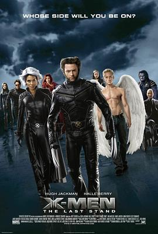

X战警3：背水一战 / X-Men: The Last Stand
又名：变种特攻3(港) / X战警：最后战役(台) / X战警3：最后之战 / X战警3：最后一战
作品信息
| 导演 | 布莱特·拉特纳 |
| 编剧 | 西蒙·金伯格 / 塞克·潘 |
| 主演 | 休·杰克曼 / 哈莉·贝瑞 / 伊恩·麦克莱恩 / 帕特里克·斯图尔特 / 法米克·詹森 / 安娜·帕奎因 / 凯尔塞·格拉玛 / 詹姆斯·麦斯登 / 丽贝卡·罗梅恩 / 肖恩·阿什莫 / 亚伦·斯坦福 / 艾利奥特·佩吉 / 本·福斯特 / 维尼·琼斯 / 埃里克·迪恩 / 丹妮亚·拉米雷兹 / 梁振邦 / 欧玛依拉 / 梅·梅纳康 / 索瑞·安达斯鲁 / 迈克尔·墨菲 / 奥莉维亚·威廉姆斯 / 约瑟夫·索默 / 比尔·杜克 |
| 类型 | 动作 / 科幻 / 惊悚 |
| 制片国家/地区 | 美国 / 加拿大 / 英国 |
| 语言 | 英语 |
| 上映日期 | 2006-09-08(中国大陆) / 2006-05-22(戛纳电影节) / 2006-05-26(美国) |
| 片长 | 104分钟 |
| IMDb | tt0376994 |
| 官方小站 | X战警豆瓣中文小站 |
最后一次看到是 2026-08-01T11:06:43+10:00 · 豆瓣原页